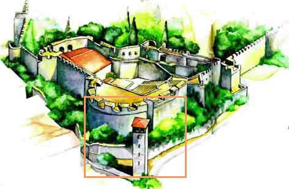

Το κάστρο της ¶ρτας
 Το κάστρο της ¶ρτας, ή Ριζόκαστρο για τους ντόπιους, χρονολογείται από το πρώτο μισό του 13ου αιώνα, όταν η ¶ρτα ήταν πρωτεύουσα του Δεσποτάτου της Ηπείρου. Είναι χτισμένο πάνω σε τεράστιες τετραγωνισμένες πέτρες, που αποτελούσαν τη βάση του τείχους της αρχαίας Αμβρακίας, από την οποία σώζεται ακόμη το μικρό της θέατρο. Στο κάστρο υπήρχε η κατοικία των δεσποτών και διοικητικά κτίρια, τα οποία καταστράφηκαν από πυρκαγιά το 1361. Από τα κτίρια της Τουρκοκρατίας ελάχιστα σώθηκαν μετά την απελευθέρωση της ¶ρτας (1881), όπως το Φεϋζούλ Τζαμί στην αριστερή όχθη του Αράχθου. | ||